Лабораторна робота · 04
Лабораторна робота 4
Тема та мета
Тема: Ітераційні обчислювальні процеси.
Мета: Навчитися обчислювати функції за рядами із заданою точністю, застосовувати рекурентні співвідношення та обчислювати скінченні ланцюгові дроби.
Умова завдань
Завдання 1
Обчислити значення заданої функції на проміжку від minX до maxX з кроком step. Косинус обчислювати за рядом Маклорена та порівняти зі стандартною функцією cos.
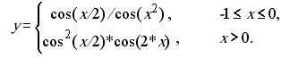
Завдання 2
Обчислити скінченний ланцюговий дріб для введеного n.
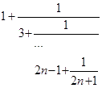
Аналіз завдань
Завдання 1
Вводяться межі проміжку, додатний крок та точність від 10⁻⁶ до 10⁻². Для −1 ≤ x ≤ 0 обчислюється cos(x/2)/cos(x²), для x > 0 — cos²(x/2)·cos(2x). Для x < −1 функція не визначена. Член ряду оновлюється за формулою term *= −x²/((2k+1)(2k+2)). Похибка дорівнює модулю різниці між результатом і стандартним значенням.
Завдання 2
Дріб обчислюється знизу вгору. Початкове значення term = 2n−1 + 1/(2n+1). Цикл від i = n−1 до 1 виконує term = 2i−1 + 1/term. Контрольний приклад: n = 5, результат ≈ 1,313035.
Блок-схеми
Завдання 1
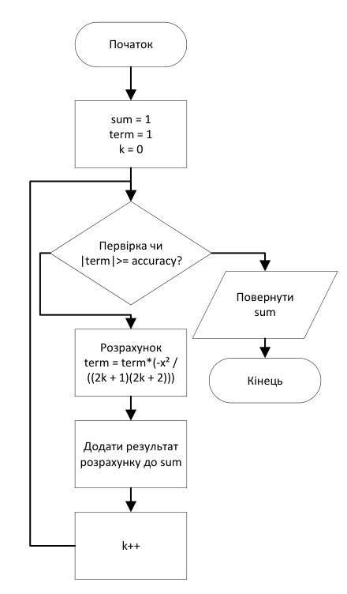
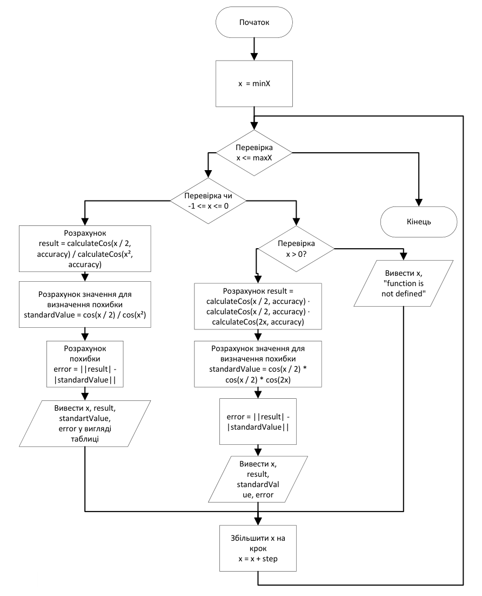
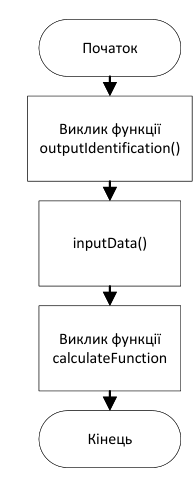
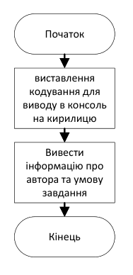
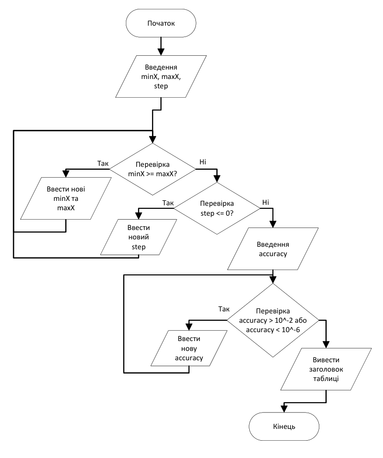
Завдання 2
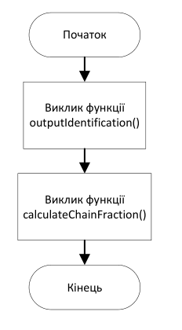
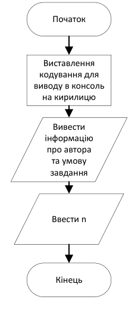
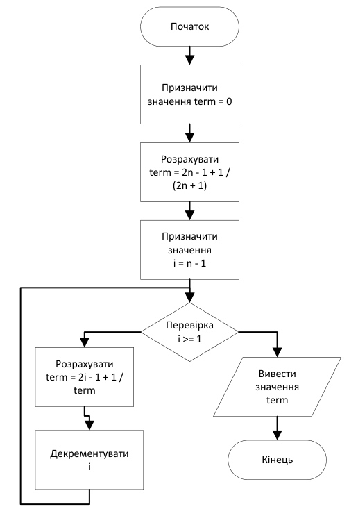
Коди програм
Завдання 1
#include <cmath>
#include <iomanip>
#include <iostream>
#include <windows.h>
using namespace std;
double minX; // Мінімальне значення аргументу x
double maxX; // Максимальне значення аргументу x
double step; // Крок зміни аргументу x
double result; // Результат обчислення функції за рядом Маклорена
double standardValue = 0; // Результат обчислення функції за допомогою стандартної функції cos
double error; // Похибка обчислення
double accuracy; // Точність розрахунку
/// <summary>
/// Функція для виведення інформації про автора та умову завдання
/// </summary>
void outputIdentification()
{
SetConsoleOutputCP(1251);
SetConsoleCP(1251);
cout << "Анастасьєв Володимир ІПЗ-11 Лабораторна 4 Завдання 1" << endl;
cout << "Обчислити значення функції за виразом:" << endl;
cout << " { cos(x/2)/cos(x^2), -1 <= x <= 0" << endl;
cout << "y = |" << endl;
cout << " { (cos(x/2))^2*cos(2*x), x > 0" << endl;
}
/// <summary>
/// Функція для введення та перевірки початкових даних
/// </summary>
void inputData()
{
cout << "Введіть minX, maxX, step наприклад: -5 5 1 " << endl;
cin >> minX >> maxX >> step;
while (minX >= maxX)
{
cout << "minX повинен бути менше за maxX, введіть нове значення minX та maxX, наприклад: -5 5" << endl;
cin >> minX >> maxX;
}
while (step <= 0)
{
cout << "Крок повинен бути більше 0, введіть нове значення step" << endl;
cin >> step;
}
do
{
cout << "Введіть точність від 10^-2 до 10^-6: " << endl;
cin >> accuracy;
}
while (accuracy < 1e-6 || accuracy > 1e-2);
cout << "===========================================================================================" << endl;
cout << setw(15) << "x" << setw(20) << "y" << setw(20) << "standard value" << setw(20) << "error" << endl;
cout << "===========================================================================================" << endl;
}
/// <summary>
/// Функція для обчислення значення косинуса за рядом Маклорена
/// </summary>
/// <param name="x">Аргумент функції косинуса</param>
/// <param name="accuracy">Точність розрахунку</param>
/// <returns>Обчислене значення косинуса</returns>
double calculateCos(double x, double accuracy)
{
double sum = 1; // Сума членів ряду Маклорена
double term = 1; // Поточний член ряду Маклорена
int k = 0; // Номер поточного члена ряду
while (fabs(term) >= accuracy)
{
term *= -x * x / ((k * 2 + 1) * (k * 2 + 2));
sum += term;
k++;
}
return sum;
}
/// <summary>
/// Функція для обчислення та виведення значень заданої функції
/// </summary>
void calculateFunction()
{
for (double x = minX; x <= maxX; x += step)
{
if (x >= -1 && x <= 0)
{
result = calculateCos(x / 2, accuracy) / calculateCos(x * x, accuracy);
standardValue = cos(x / 2) / cos(x * x);
error = fabs(result - standardValue);
cout << setw(15) << x << setw(20) << result << setw(20) << standardValue << setw(20) << error << endl;
}
else if (x > 0)
{
result = calculateCos(x / 2, accuracy) * calculateCos(x / 2, accuracy) * calculateCos(2 * x, accuracy);
standardValue = cos(x / 2) * cos(x / 2) * cos(2 * x);
error = fabs(result - standardValue);
cout << setw(15) << x << setw(20) << result << setw(20) << standardValue << setw(20) << error << endl;
}
else
{
cout << setw(15) << x << setw(20) << " function is not defined" << endl;
}
}
}
/// <summary>
/// Головна функція програми
/// </summary>
/// <returns>Код завершення програми</returns>
int main()
{
outputIdentification();
inputData();
calculateFunction();
}
Завдання 2
#include <iostream>
#include <Windows.h>
using namespace std;
int n; // Кількість елементів ланцюгового дробу
/// <summary>
/// Функція для виведення інформації про автора та умову завдання
/// </summary>
void outputIdentification()
{
SetConsoleOutputCP(1251);
SetConsoleCP(1251);
cout << "Анастасьєв Володимир ІПЗ-11 Лабораторна робота 4 завдання 2" << endl;
cout << "Обчислити скінченний ланцюговий дріб:" << endl;
cout << "1 + 1 / (3 + 1 / ... 2n - 1 + 1 / (2n + 1))" << endl;
cout << "====================================================" << endl;
cout << "Введіть значення n: ";
cin >> n;
cout << endl;
}
/// <summary>
/// Функція для обчислення значення ланцюгового дробу
/// </summary>
/// <param name="n">Кількість елементів ланцюгового дробу</param>
void calculateChainFraction()
{
double term = 0; // Поточне значення ланцюгового дробу
term = 2 * n - 1 + 1.0 / (2 * n + 1);
for (int i = n - 1; i >= 1; --i)
{
term = 2 * i - 1 + 1.0 / term;
}
cout << "Результат обчислення: " << term << endl;
}
/// <summary>
/// Головна функція програми
/// </summary>
/// <returns>Код завершення програми</returns>
int main()
{
outputIdentification();
calculateChainFraction();
}
Перевірка розрахунків
Завдання 1
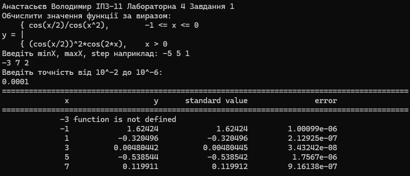
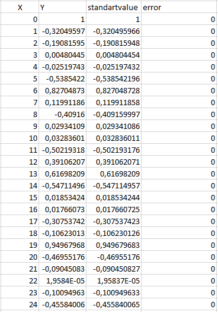
Завдання 2
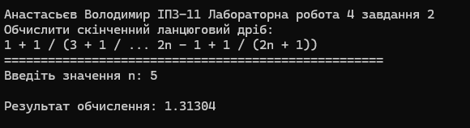
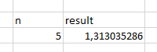
Висновки
У ході лабораторної роботи було розроблено дві програми ітераційних обчислювальних процесів. Закріплено використання циклів, умовних операторів, функцій та рекурентних співвідношень для розв’язування математичних задач. Окрему увагу приділено вибору початкових значень і порядку виконання повторюваних обчислень.
У першому завданні реалізовано обчислення косинуса за рядом Маклорена із заданою точністю. Кожний наступний член ряду визначається через попередній, тому не потрібно окремо обчислювати степені та факторіали. Розрахована функція вибирається залежно від значення x, а для аргументів поза її областю визначення виводиться повідомлення. Перед обчисленнями перевіряються порядок меж проміжку, додатність кроку та допустимий діапазон точності.
Для кожного визначеного значення функції програма виводить результат обчислення за рядом, значення зі стандартною функцією cos та абсолютну різницю між ними. Таке подання дає змогу оцінювати узгодженість двох способів обчислення на вибраному проміжку. Задана точність використовується як умова завершення обчислення ряду; фактична похибка складеного виразу відображається окремо в таблиці.
У другому завданні скінченний ланцюговий дріб обчислено знизу вгору. Після визначення найглибшої частини дробу цикл послідовно переходить до попередніх рівнів, використовуючи вже отриманий результат. Для контрольного значення n = 5 обчислення дає приблизно 1,313035, що відображено у прикріпленій перевірці.
Робота дала змогу порівняти два види ітерацій: накопичення суми до досягнення умови точності та обчислення виразу із заздалегідь відомою кількістю рівнів. Складені блок-схеми відображають послідовність викликів функцій, розгалуження і цикли, а наведені результати та контрольні розрахунки доповнюють перевірку реалізованих алгоритмів.